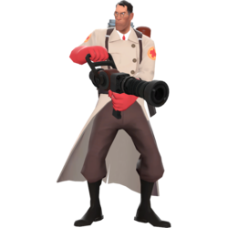
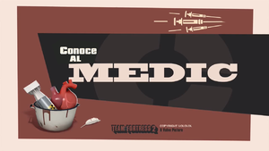

medic
- icono:

- tipo: asistencia
- saldu: 150/
 225
225 - velocidad: 107%
meet the medic
El Medic es un hombre teutón con una ética médica un tanto cuestionable, natural de Stuttgart (Alemania). A pesar de su peculiar interpretación de la medicina es la clase curativa del equipo. Aunque la Pistola de Jeringas y el Serrucho del Medic no son las mejores armas para el combate directo, normalmente se le puede encontrar en primera línea, curando a sus compañeros heridos mientras intenta mantenerse alejado del fuego enemigo. Cuando el Medic utiliza su Pistola Médica sobre un aliado herido, le hará recuperar puntos de salud. En el caso de que el aliado tenga la vida completa obtendrá un exceso de curación temporal, llegando a cubrir hasta un 150 % de su salud base. Los aliados que no hayan recibido daño recientemente recuperarán su salud más rápidamente, alentando a los aliados a retirarse a tiempo cuando están heridos. Mientras el Medic cura a un compañero también llena gradualmente una barra de Supercarga, la cual se cargará más rápido si el paciente está herido. Cuando la barra de Supercarga está llena, la Pistola Médica empezará a soltar chisporroteos de electricidad, indicando que se puede activar una Supercarga que les dará a él y a su paciente efectos beneficiosos durante ocho segundos. Una carga de la Pistola Médica ofrecerá invulnerabilidad temporal; una carga de la Kritzkrieg garantizará críticos; el Apañador otorga a el Medic y a su paciente curación rápida junto con inmunidad a empujones y a explosiones de aire comprimido; el Vacunador otorga resistencia a ciertos tipos de daño (balas, explosivos y fuego) Aunque el Medic no puede curarse a sí mismo, es la única clase capaz de regenerar salud. Cuanto más tiempo pase fuera de combate y sin recibir daño, mayor será la regeneración de salud que recibirá de forma pasiva. Un Medic herido se regenerará a una velocidad de 3 PS por segundo, lo cual aumenta hasta un máximo de 6 PS por segundo (esta habilidad recibir un efecto positivo del Amputador y otro negativo de la Blutsauger). El Medic está doblado por Ricky Coello en la versión española y Robin Atkin Downes en la versión original.